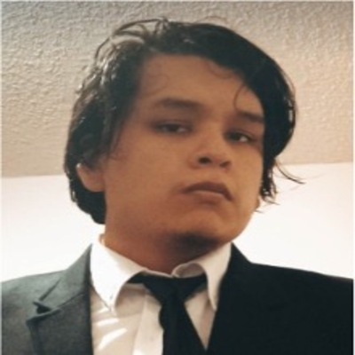

Soy Jose Antonio Cayllahua Gutierrez, un estudiante de 20 años de Ingeniería de Software. Mi elección de esta
carrera se basa en mi profundo interés por la tecnología y la programación, una pasión que ha crecido desde mi
infancia. A lo largo de mis estudios, he adquirido habilidades en diversos lenguajes de programación, incluyendo
Java, C++, C# y HTML. Además de mi enfoque académico, disfruto de jugar videojuegos de estrategia como League of
Legends (LoL) y en mi tiempo libre, canalizo mi creatividad a través del dibujo. Estoy emocionado por las
posibilidades que el mundo de la ingeniería de software me ofrece y ansío seguir explorando este apasionante campo.
Soy una persona dedicada y responsable, cuento con conocimiento en arquitectura y patrones de software. Leguajes de
programación que manejo es Javascript, Python, C++, C#, Kotlin y Dart. Me desenvuelvo principalmente en Backend y
front end . Cuento con conocimiento general en desarrollo de aplicaciones móviles.

Soy Julio, un estudiante de 21 años en UPC. Mi pasión es la programación. Me encanta sumergirme en el mundo de los
códigos y desarrollar soluciones creativas. Siempre estoy buscando nuevos desafíos para mejorar mis habilidades y
crear aplicaciones impactantes. Soy un experto en lenguajes de Programacion como C++, HTML, CSS , Java, Dart ,
Kotlin y JavaScript
Estudiante de la carrera de ingeniería de software en la Universidad Peruana de Ciencias Aplicadas. Cuento con
conocimientos de C++, C#, Java, HTML5, CSS3, Python, JavaScript, etc. Además, tengo habilidades comunicativas que
ayudan en el desenvolvimiento del equipo. En conjunto buscamos crear una solución web que ayude a resolver los
problemas del día a día en diferentes ámbitos comerciales.